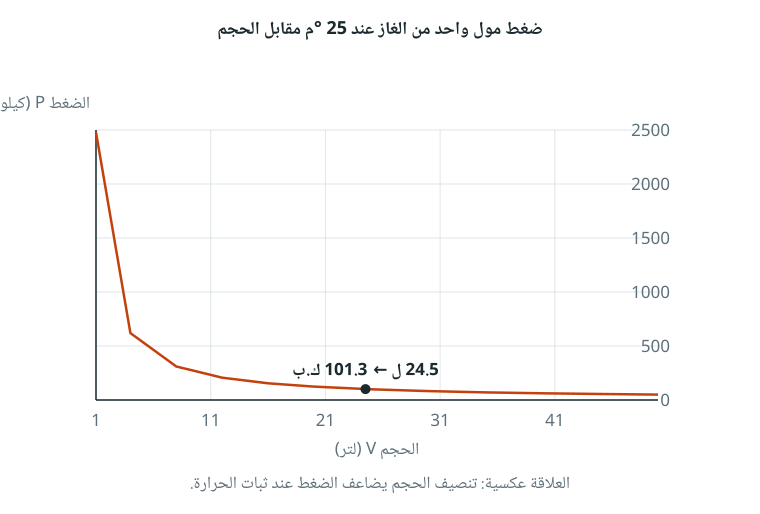

كيف يتحول عدد الجزيئات والحرارة إلى ضغط؟
غيّر عدد المولات والحرارة والحجم، وتابع الضغط على المقياس.
P = nRT/V
في اللوحة يبدأ الحجم عند 24.5 لترًا ليقع الضغط على 101.3 ك.ب — الظروف القياسية.
افتراضات النموذج والمصدر
غاز مثالي بلا حجم جزيئي ولا قوى بينجزيئية
R = 8.314 J/(mol·K)
الحرارة مطلقة بالكلفن
كل جزيء في الغاز يرتطم بالجدار وينقل إليه زخمًا. مجموع هذه الضربات في الثانية على وحدة المساحة هو الضغط. فإذا ضاعفت عدد الجزيئات تضاعف الضغط، وإذا ضاعفت المساحة التي تتحرك فيها هبط إلى النصف.
اللوحة تربط ثلاثة مدخلات بمخرج واحد. ابدأ بالافتراض الافتراضي ثم أنصِف الحجم ولاحظ أن الضغط يقفز إلى الضعف، ثم ارفع الحرارة من 0 إلى 200 °م ولاحظ أن الزيادة خطية في الكلفن لا في الدرجة المئوية.
الآلية
كيف يحدث الأمر على مستوى الجسيمات أو المتغيّرات المباشرة
الضغط ناتج عن معدّل نقل الزخم إلى الجدار: كل ارتطام ينقل 2mv، وعدد الارتطامات في الثانية يتناسب مع عدد الجزيئات وسرعتها، وسرعتها مع الجذر التربيعي للحرارة المطلقة. حاصل ضرب هذه العوامل يعطي pV=nRT بلا افتراضات إضافية.
الأرقام والوحدات
العلاقات والوحدات والنطاقات العددية التي تسند الشرح
P = nRT/V. عند مول واحد و25 °م (298.15 ك) وحجم 24.5 لترًا يكون الضغط 101.3 كيلوباسكال — وهي الظروف القياسية. وعند الحجم نفسه بحرارة 0 °م يهبط إلى 92.6 كيلوباسكال لأن النسبة 273.15/298.15 = 0.916.
الفرق الدقيق
المفهوم الملتبس الذي يُخلَط به، وأين ينفصلان
يُخلط بين الضغط الكلي والضغط الجزئي: في خليط، ضغط كل غاز يُحسب بعدد مولاته وحده (قانون دالتون). ويُخلط بين الدرجة المئوية والمطلقة: الانتقال من 0 إلى 20 °م لا يضاعف الضغط، بل يرفعه بنسبة 293/273 فقط.
حدود التعريف
أين ينكسر التعريف أو النموذج وما الذي لا يفسّره
النموذج يفشل عند الضغوط العالية أو الحرارة القريبة من التكاثف، لأن حجم الجزيئات نفسه وقوى التجاذب بينها تصبح مؤثرة، ويحلّ محلّه معادلة فان دير فالس أو معادلات الحالة الحقيقية. كما يفشل عند الجزيئات القطبية القوية كالبخار قرب التشبّع.

| الكمية | القيمة | المصدر |
|---|---|---|
| ثابت الغازات العام | 8.314 J/(mol·K) | [1] |
| الضغط القياسي | 101.325 ك.ب | [2] |
| حجم مول من الغاز عند 25 °م و1 ضغط جوي | 24.5 لتر | [2] |
المصادر
- 1 The Ideal Gas Law — College Physics 13.3 — OpenStax. openstax.org/books/college-physics/pages/13-3-the-ideal-gas-law · اطُّلع عليه 2026-11-16
- 2 Molar gas constant and standard conditions — NIST. www.nist.gov/pml/weights-and-measures · اطُّلع عليه 2026-11-16
راجعه: مراجعة آلية — بوابة الديوان (فحص بنيوي وأرقام) 2026-11-16 · 2026-11-16 · آخر تحديث 2026-11-16
رجوع إلى المعمل